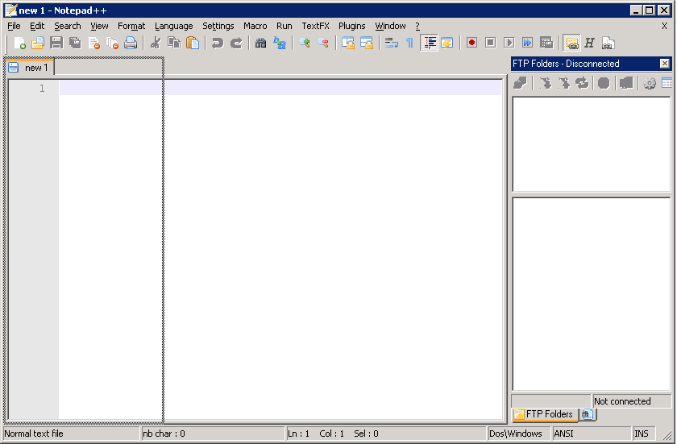

Notepad++ supports so called Dockable Windows. These are part of the GUI, but you can move them around and choose whether you want them aligned to any side of the main windows (docked), or floating like a separate window.
To change the location of a dockable window, click and drag the titlebar of the window around. When you drag near any edge of the main window, a rectangle will be drawn indicating that the window will be docked there if you release it. Moving it anywhere else will draw the rectangle in the same way the window would be positioned if it were floating.
You can resize floating windows like any other window by dragging its edges, but to resize a dockable window you have to drag the edge that is adjacent to the main window.
There can be multiple dockable windows grouped together. If this is the case, only one of the windows is shown, and the others are reachable by a tab bar that is shown below the visible window. Selecting an item from the tab bar will hide the visible window, and show the corresponding window from the tab bar. You can recognize the dockable windows in the tab bar by their icon.